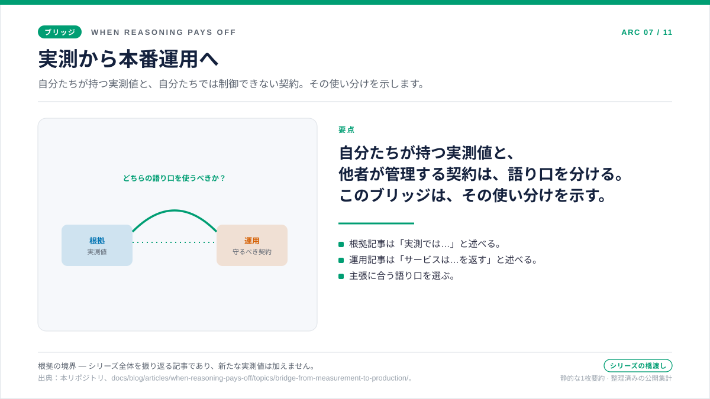

橋渡しの記事 · 根拠レイヤーと運用レイヤーのあいだ
測定から本番へ
五本の根拠記事から得られるのは、単一の判定ではなく、判断の習慣です。「賢そうに聞こえるから」という理由で推論強度を上げるのではなく、コスト・品質・レイテンシ・トークン構成をあわせて読み、実際に費用に見合う箇所にだけ追加のトークンを使います。この習慣があれば、ベンチマーク上で強度を選べます。しかし、稼働中のサービスを運用するには十分ではありません。実際のトラフィックでは、リクエストがスロットリングされ、再試行され、キャッシュされ、スピルオーバーし、実際の容量に合わせてサイジングされます。そこで問いは、ベンチマークでは推論がどこで費用に見合ったかから、本番環境でその判断をどう安全に維持するかへ変わります。本記事では、この問いと記述方法の切り替えを扱います。

この橋渡しが存在する理由
五本の根拠記事は、推論トークンをいつ使う価値があるかという問いに答えます。ワークロードを実測し、コストを品質・レイテンシ・トークン構成とあわせて読みます。しかし本番環境では、同じプロンプトが繰り返し届き、ほかのトラフィックとともにキャッシュを利用し、ときには 429 が返り、プロビジョニングされた容量を共有します。ベンチマークでトークンをいつ使うかは判断できても、本番固有の条件下でどう使い続けるかは別の問題です。
本記事は、その間をつなぐ引き継ぎ資料です。新たな実測でも、運用仕様でもありません。根拠レイヤーで得た判断を、ベンチマークでは扱っていない条件下で運用レイヤーが維持します。この区別を明示すると、文書化されたサービスの挙動を自分たちの実測と誤認したり、自分たちの実測値をプラットフォームの保証と誤認したりするのを防げます。以下では、役割、根拠、記述方法が異なる二つのレイヤーを整理します。
問い
根拠に基づく判断を、いつ運用方針へ移す必要があるのでしょうか。また、二つのレイヤーの間で何を引き継ぐのでしょうか。
根拠
根拠レイヤーの五本の記事は、短い事実回答、多段推論、ツールを使うエージェント、隠れた推論トークン、モデル化した PAYG 対 PTU のクロスオーバーをそれぞれ扱い、コスト・品質・レイテンシ・トークン構成をあわせて読みます。コストの増加だけでは判断せず、品質やレイテンシとの関係を確認します。各記事は、絶対値が変わっても利用できる判断基準で締めくくります。
判断
運用へ引き継ぐのは絶対値ではなく、根拠に基づく判断方法です。運用記事はベンチマークではなく、公式仕様に基づく方針として書かれています。Tier 1 の文書化された挙動と Tier 2 の運用上の推論を区別し、境界を明示したうえで、ベンチマーク結果だけでは答えられない問いに適用します。
記述方法が変わる理由
根拠の記事では「実測しました」と記述します。結果のばらつきも含め、自分たちが所有する実測値として示します。運用の記事では、「Microsoft Learn に記載された仕様」と「そこから導く実務上のルール」を区別します。出典を示し、保証された内容と推論を分けることで、運用者がベンチマークの再実行を待たずに判断できます。
自分たちが所有する実測値にはベンチマークの記述を、他者が維持する契約をランブックへ変換する場合には運用の記述を使います。文書化された挙動を「実測した」と書いたり、自分たちのコスト曲線を「Microsoft Learn に記載されている」と書いたりすると、根拠の出所が曖昧になります。この切り分けは、意図した設計です。
実務では三か所に現れます。
- 時制。 根拠の記事は実測結果を過去形で書きます（「none 強度ではリクエストあたり平均 $0.000587 でした」）。運用の記事は契約上の挙動を現在形で書きます（「サービスは
retry-after-msヘッダーつきで 429 を返します」）。 - 出典。 根拠の記事は本リポジトリの
analysis.json成果物を引用します。運用の記事はアクセス日付つきで Microsoft Learn のページを引用し、文書が沈黙しているときにだけリポジトリの測定値へ立ち戻ります。 - 結びの一行。 根拠の記事は「わかったこと」や「運用チェックリスト」で終わります。運用の記事は「実務上のルール」で終わります。結びの一行は、読者がいま読んだ根拠がどの種類なのかを伝えます。
二つのレイヤーが共有するもの
三つの習慣が、双方向にその境界を渡ります。
一つ目は対で読むことです。ベンチマークでは、コストを品質・レイテンシ・トークン構成とあわせて読みます。運用でも、retry-after-ms をレイテンシ方針と、キャッシュヒット率を初回トークンのレイテンシと、max_output_tokens を許容する同時実行数とあわせて読みます。問いが変わっても、関連する二つの指標を同時に確認する原則は変わりません。
二つ目は根拠の境界です。すべてのベンチマーク記事は、測定が何を含み何を含まないかを述べます——強度設定あたり N = 20 のサンプル、R = 3 回の反復、公開集計の測定範囲、定価のみ。すべての運用記事も同じことを別の語彙で述べます——Tier 1 のスペック対 Tier 2 の推論、公開マニフェスト対非公開アーカイブ、アクセス日付つきの引用対運用上の経験則。境界を明示しておけば、読者がどちらの根拠も保証だと受け取ってしまうのを防げます。
三つ目は次の対応です。各根拠記事は、ワークロードが変わった場合に行う次の実験を示します。各運用記事は、次の観測から何を判断できるかを示します。どちらも、単一の判定ではなく判断の枠組みを提供します。
運用レイヤーで本当に新しいもの
根拠レイヤーが届かない三つのものが、運用レイヤーに現れます。
ヘッダーの契約を扱います。retry-after-ms、スピルオーバーのヘッダー、キャッシュの一致条件は実測値ではなく、サービスが文書化した挙動です。ベンチマークの強度設定では、その契約を検証できません。運用の記事では、契約が保証する内容と保証しない内容を区別します。
ルーティングを扱います。prompt_cache_key は単なるメタデータタグではなく、プレフィックスのハッシュと組み合わせてルーティングの親和性を制御します。キャッシュのリテンションは副作用ではなく、データ所在地にも関係するリクエスト単位の方針です。これらは、ワークロードをデプロイして初めて生じる運用上の問いです。
サイジングへの変換を扱います。移行サイジングの記事は、同じ実測方法をプロビジョニングされたスループットのサイジングへつなげます。チャートの数値は例示であり、容量の実測結果ではなく計算値です。ただし、見える出力、隠れた推論、キャッシュされた入力、応答の上限を実測してからデプロイのサイズを決めるという原則は、ベンチマーク記事と共通しています。
根拠の記事のあとに運用の記事を読む読み方
どちらのレイヤーでも、まず「問い・根拠・判断」を読み、そのページが必要な内容を扱っているか確認します。次に本文で仕組みと含意を確認し、出典で根拠の境界を確認します。その境界が自分の状況に当てはまる場合にだけ、判断を適用してください。
根拠の記事では、境界は「一つのテナント、一つのリージョン、一つの価格スナップショットで、N = 20 のサンプルで測った測定区間」です。運用の記事では、境界は「アクセス日付の時点で Microsoft Learn が文書化している内容に、本リポジトリが責任を持って述べる、限られた運用上の推論を加えた範囲」です。境界は違っても、規律は同じです。
出典 · 根拠の境界
出典と根拠の境界
この橋渡しの記事は、新しい測定も新しいスペックの引用も持ち込みません。二つのレイヤーをつなぐ編集上の契約を述べるだけです。リンク先の記事で引用されている出典が、橋渡しの両側にそれぞれ適用されます。
- 根拠側の引用： 記事ごとの
analysis.json成果物、実行時点で適用されていた価格スナップショット、そしてdocs/05-methodology.mdの方法論契約。 - 運用側の引用： アクセス日付つきの Microsoft Learn 製品ドキュメント、
docs/15-spec-vs-inference-taxonomy.mdのスペック対推論の分類体系、そしてdocs/16-release-tiers-and-redaction-policy.mdのリリース階層の定義。
実務上のルール
実務上のルール：根拠レイヤーで追加のトークンが費用に見合うことを確認し、運用レイヤーでデプロイ後もその判断を維持できることを確認します。この順序で読み、各レイヤーの根拠の境界を明示してください。
次： 429 は単なるエラーではなく、回復シグナルである — PTU 容量が「いまは無理」と告げるとき、クライアントは次の一手を どう決めるべきか。